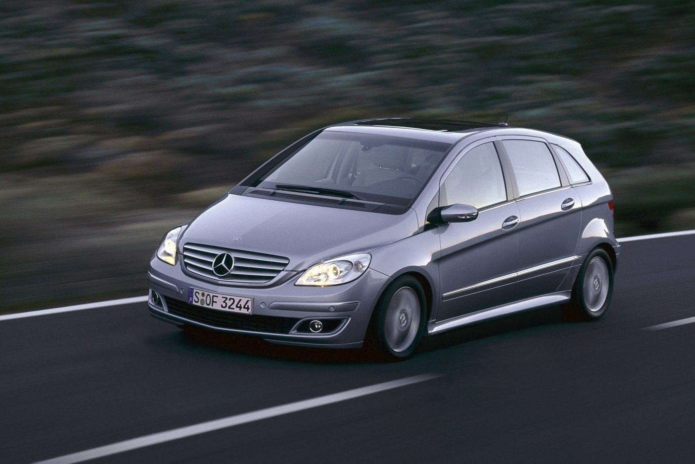
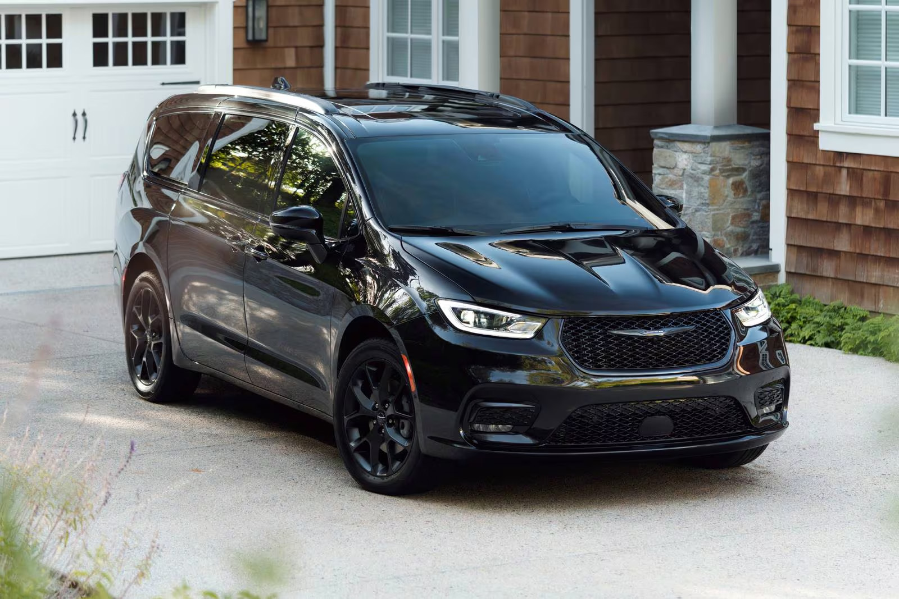
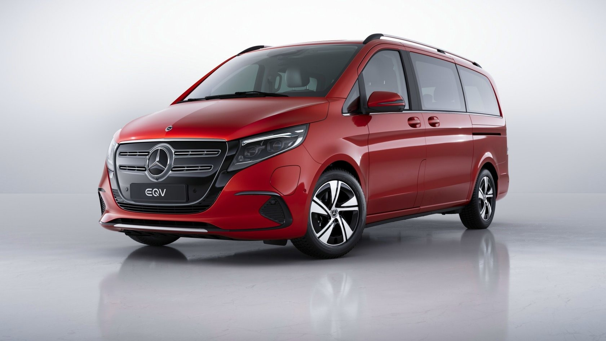

Кузов МИНИВЕН

Минивэн (Minivan) – это автомобиль, ориентированный на простор, комфорт и вместимость, предназначенный в первую очередь для семейных поездок или коммерческого использования. В отличие от кроссоверов и внедорожников, минивэны предлагают максимально удобный салон, повышенную вместимость и функциональность.
Основные характеристики:
- Просторный салон – 3 ряда сидений, удобные посадочные места для 6–8 пассажиров.
- Гибкость компоновки – возможность трансформации сидений, раскладные кресла, сдвижные двери.
- Высокая крыша и ровный пол – создают удобство для пассажиров и облегчают посадку.
- Функциональные технологии – развлекательные системы, климат-контроль для всех зон.
- Экономичные двигатели – чаще всего небольшие турбомоторы или гибридные установки для снижения расхода топлива.
Классификация:

Mercedes B-Class

Chrysler Pacifica
- Компактные минивэны – городские модели с уменьшенными габаритами (Ford C-Max, Mercedes B-Class, Opel Zafira).
- Среднеразмерные минивэны – сбалансированные по размеру и вместимости (Volkswagen Sharan, Chrysler Pacifica, Kia Carnival).
- Полноразмерные минивэны – максимальная вместимость и комфорт (Toyota Alphard, Honda Odyssey, Mercedes-Benz V-Class).
- Премиальные минивэны – люксовые версии с топовым оснащением (Lexus LM, Buick GL8, Mercedes-Benz EQV).

Toyota Alphard

Mercedes EQV
Преимущества:
- Просторный и удобный салон – комфорт для всей семьи или группы пассажиров.
- Гибкость в использовании – возможность трансформировать салон под разные нужды.
- Экономичность – по сравнению с внедорожниками, минивэны чаще потребляют меньше топлива.
- Доступные цены на стандартные модели – дешевле полноразмерных внедорожников.
Недостатки:
- Не самый привлекательный дизайн – многие модели выглядят утилитарно.
- Не для активного драйва – большие габариты и высокий центр тяжести ухудшают управляемость.
- Ограниченная проходимость – передний или полный привод, но нет серьёзных внедорожных возможностей.
Минивэн – это идеальный вариант для семейных поездок и перевозки большого количества пассажиров с комфортом. Несмотря на свою практичность, он уступает по управляемости легковым автомобилям и не подходит для активного драйва.